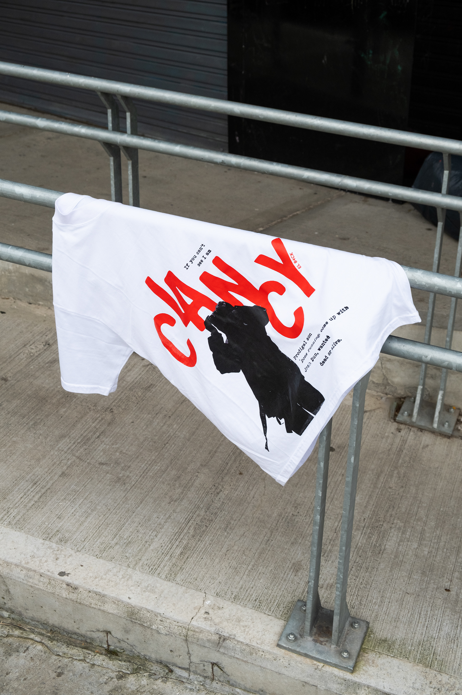
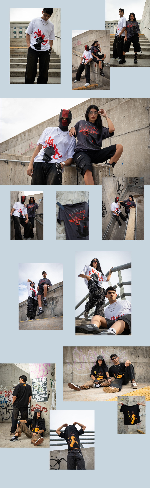

Producción desarrollada para mi marca de merchandising El B4ack, para su cápsula de 3 remeras de la banda Twenty One Pilots.
Me encargué de diseñar las remeras y la producción, así como también de sacar las fotos. El objetivo era crear contenido para redes, que resultara atractivo para presentar la primera cápsula.

